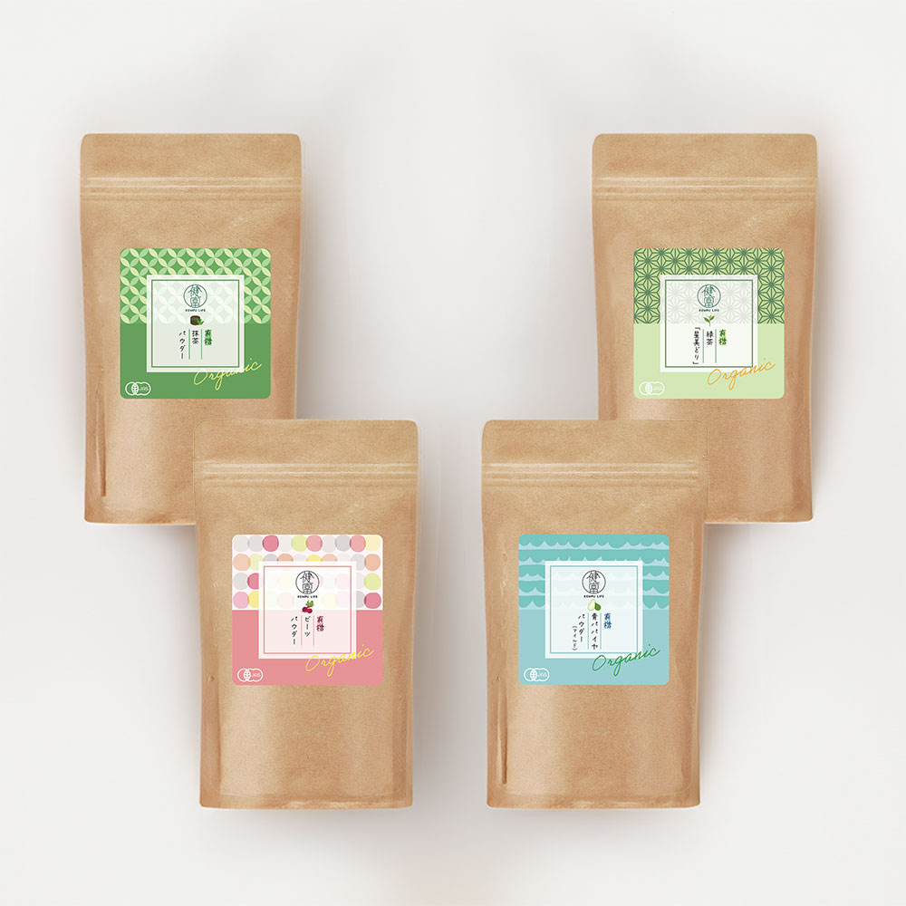
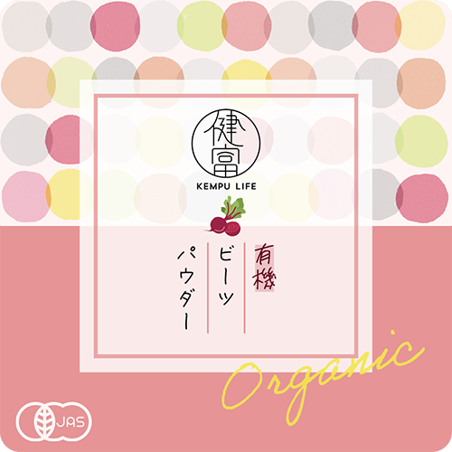
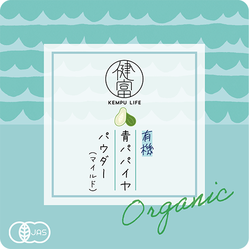
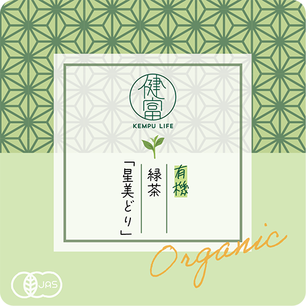
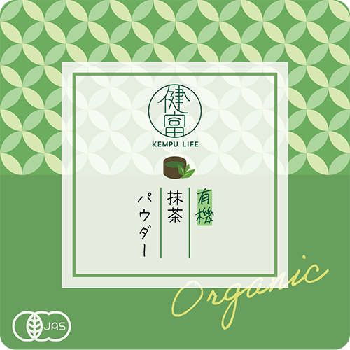

スーパーフード
パッケージ(コンペ作品)
--About
「ビーツ」「青パパイヤ」「緑茶」「抹茶」のスーパーフード、4種のパッケージデザインコンペに応募するため作成しました。
--Design Concept
ターゲット・ポイント
| ターゲット | 健康への関心が高い20～40代女性 |
|---|---|
| ポイント | 元々のパッケージが暗く、いかにも「健康食品」といった印象で、若い世代が手に取りづらいと感じたため、そのイメージからの脱却を狙いました。 |
デザイン・反省点




ロゴ下のイラストをIllustratorで描き、何の商品か分かりやすくしました。
ビーツと青パパイヤの背景はphotoshopのブラシで描き、緑茶と抹茶の背景はIllustratorのパターンで作成しました。
- 【反省点】
- ・オーガニック感が薄い。パッケージを見ただけではどういう商品なのか、どんな効果があるのか分からない。
- ・年齢層を狭めすぎた。ターゲットはもっと広く、60代くらいまで広げて普遍的なデザインにするべきだった。
- ・イラストではなく、写真を取り入れるなど、アイデアをもっと広げるべきだった。
- 制作期間
- 2日間
- 使用ツール
- Illustrator/Photoshop